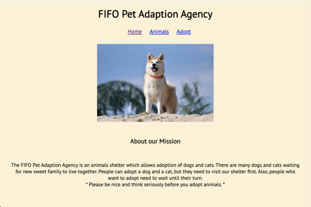

About Me
After I graduated from college as a Computer Science major, I couldn't decide what I wanted to be, and in which technology field I should use my knowledge. I knew I enjoyed learning computer technologies and working on a team, and I enjoyed the challenge of trying to solve problems individually. So, I began to build websites or apps carefully following the instructions and I was surprised and delighted when they ran successfully. I wanted to learn more and found a school that offered me that opportunity.
- My Hobbies:
- Photography
- Music is my life
- Travel around the world
- Learn programming languages
Projects
Battleship
The interactive game where you can challenge opponents in the classic game of sinking ships. This application allows the user to play a live game of battleship against another user. The user will receive live updates on their opponents' advancements on the game board. Additionally, the user has the ability to leave a game and return to it later.
Created with:Spaced Repetition

The Spaced Repetition is an application that allows a user to learn 10 basic Spanish words and allows a user to take a "practice word" anytime when they are ready for it. Users are able to check if their answer is correct or incorrect directly on the learning page. Also, Spaced Repetition will display how many times they got correct or incorrect answers for each word and total score on the dashboard page.
Created with:FIFO Pet Adaption Agency
- 
The FIFO (First In First Out) Pet Adaption Agency is an animal shelter that allows the adoption of dogs and cats. There are many dogs and cats waiting for a new sweet family to live with together. Anyone is able to adopt a dog and a cat, but they need to wait until their turn in the adoption line.
Created with:FoodRecipes

The FoodRecipes is an application for everyone who wants to cook for meals or desserts. Share your favorite food recipes with other people who want to try your recipes. Also, If the user does not like added recipes, they can remove recipes anytime they want.
Created with:Noteful App

The Noteful App is that user can create new folders and notes. Each folder can have a lot of notes. Also, each note will display and organize by added date. When a specific note is clicked, it will display detail content.
Created with:Bookmarks App
The created Bookmarks App is an application that the user can use to organize their favorite web pages. The user is able to add or delete new pages on the Bookmarks App anytime and as often as the user wants. The Bookmarks App allows users to rate the website and write descriptions as well. It can also filter by the rating if the user chooses to.
Created with:Quiz App

The Math Quiz App, created with a pair partner, is a quiz to test basic math knowledge with 5 questions. The user is able to check “correct” or “incorrect” buttons on each page and they receive a final score at the end.
Created with:Web App

A web application created for the user can create their own blog or web page. It allows the user can decorate font, color, and images however they want to decorate.
Created with: